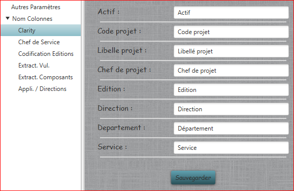
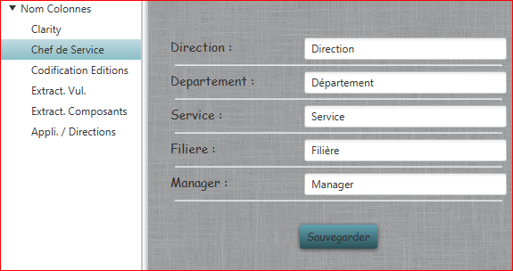
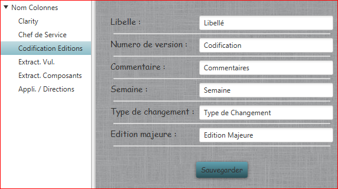
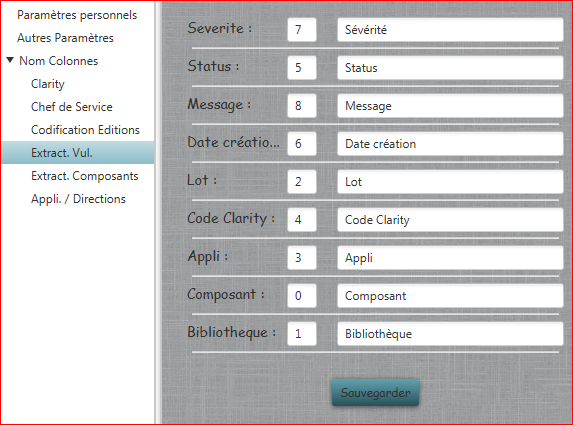
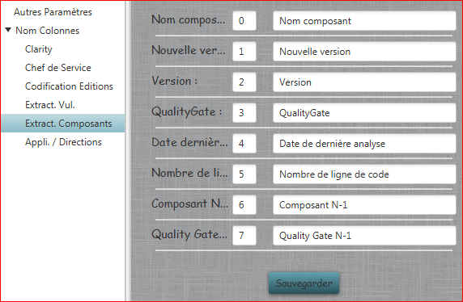
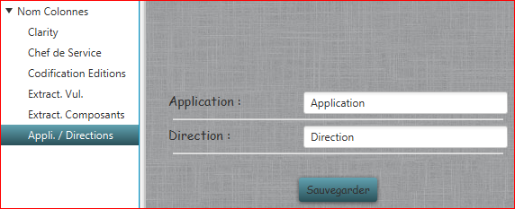

Noms Colonnes
Permet de modifier les noms et les indices des colonnes des fichiers Excel :
- Clarity : Nom des colonnes utilisées du fichier d'extraction mensuel des projets Clarity.

- Chef de Service : Nom des colonnes du fichier de recensement des chefs de services.

- Codification Editions : Nom des colonnes du fichier d'extraction des éditions depuis l'application web.

- Extract. Vul. : Nom des colonnes et indices de celles-ci pour l'extraction des vulnérabilités depuis SonarQube.

- Extract. Composants : Nom des colonnes et indices de celles-ci pour l'extraction des composants SonarQube.

- Appli. / Directions : Nom des colonnes du fichier de correspondances entre Applications et Directions

Tous les paramètres sont sauvegardés dans un fichier proprietes.xml à la racine de l'application.